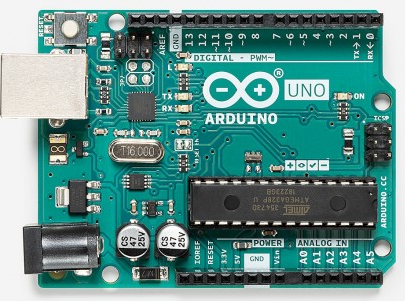
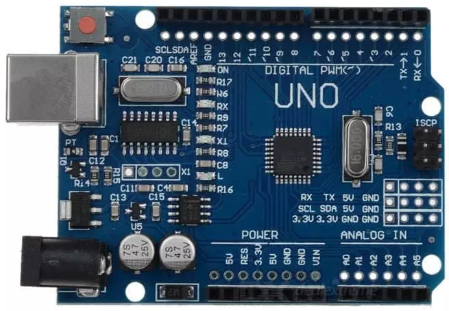
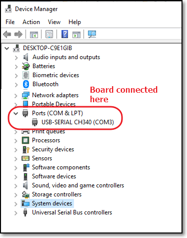
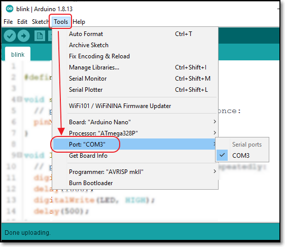

name: default-page layout: true background-image: url("fablabsp_icon_100px.png") background-position: 98% 2% --- class: center, middle # Arduino Using Windows .footnote[ [Arduino Notes](https://rdorville.github.io/EP1000/arduino/arduinoProgramming.html) ] --- template: default-page layout: false # UNO boards ### There are mainly 2 types of UNO boards .left-column-50[  - [Arduino Uno Rev 3](https://store.arduino.cc/usa/arduino-uno-rev3) - Uses the ATMega328 processor in a DIP28 form factor - Uses the FTDI USB interface IC - USB Drivers built into MS Windows ] .right-column-50[  - UNO Clones - Uses the ATMega328P processor in a TQFP32 form factor - Uses the CH340 USB interface IC - May need to install the drivers into MS-Windows ] .footer[How to Install [CH340 Drivers for Windows](https://learn.sparkfun.com/tutorials/how-to-install-ch340-drivers/all)] --- template: default-page layout: false # Which COM port to use? .left-column-50[  ] .right-column-50[ - Install the CH340 drivers, if necessary - Open .blu[Device Manager], look for .blue[Ports (COM & LPT)] - If installed, COM port will be listed. - Use this port in<br> ArduinoIDE > Tools > Ports  ] --- class: center, middle # Arduino Using Windows ### .red[End]